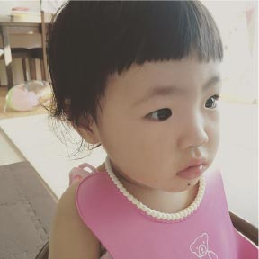
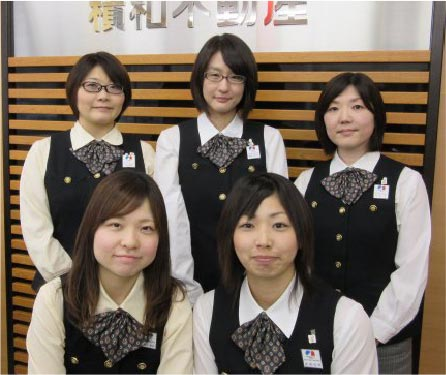
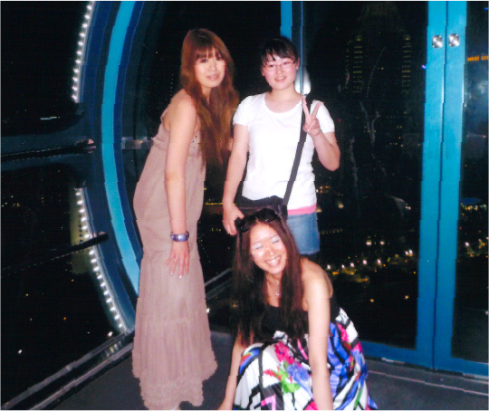

03

林 千春Hayashi Chiharu アセットプランニング部 マネージャー
-
1
千葉県で生まれる
旭市で次女として生まれた。
後に妹が生まれ3人姉妹となる。
運動が得意で活発な子供だった。 -
6
小学校入学
女子ばかりの
「チャリンコ隊」で
校庭や近所を走り回る。
長縄、鬼ごっこ……
いつもリーダー格だった。 -
12
中学校入学
中学ではソフト
テニス部で活躍。
前衛を任され、
大会でも活躍した。
3年の時に県大会
ベスト4！ -
 18最初の就職
高校時代は
“目立ちたがり屋”の
本領発揮。
アルバイトにも遊びにも、
積極的だった。卒業後、
ファッションブランドの
ショップ店員になった。 -
 20賃貸営業を経験
２年間、ショップで働いたが
友人から賃貸営業の仕事に
向いていると薦められて転職。 -
22
入社
不動産事業に興味を持ち入社。
しかし3か月で壁に。退職を考えるも
社長の一言で翻意。 -
27
女性初の課長に
契約も取れるようになった。
主任、課長代理を経て、女性初の課長に昇進。
F
U
T
U
R
E